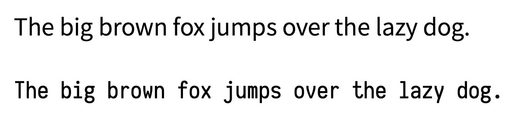
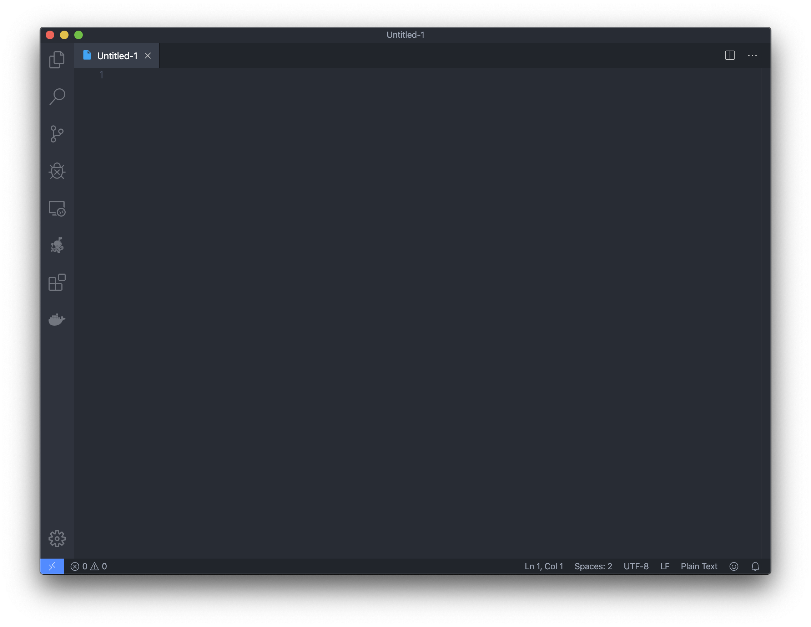

REPL 和编辑器
REPL
使用 info irb 来查看 irb 命令的帮助，我们会看到 irb 是「交互式 Ruby 壳程序」（Ruby Interactive Ruby Shell）的缩写，所谓的交互式就是 Ruby 程序的 REPL 环境。
REPL 是一个在 Lisp 和受其影响的语言中非常常见的概念，是「读取-求值-输出 循环」（Read-Eval-Print Loop）的缩写。启动 REPL 程序后，你可以立刻运行你的各种代码，而无需新建一个文件编辑后再去执行。这对于测试、调试非常实用。
对于 Ruby 来说，在终端程序中输入 irb 按下回车后，Ruby REPL 程序就会启动。
❯ irb
2.7.0 :001 >
在这个环境里输入 puts 'Hello World' 然后回车，就会立刻看到屏幕上打印了 Hello World。Hello World 两侧被「单引号（'）」包围，来告诉电脑这里是一个字符串，而不是代码。注意：这里的单引号是英文输入法下的傻瓜单引号（'），而不是中文的单引号（‘’）
❯ irb
2.7.0 :001 > puts 'Hello World'
Hello World
=> nil
2.7.0 :002 >
在这个环境里输入 exit 然后回车则会退出。
REPL 叫「读取-求值-输出 循环」，我们就来分别看一看这四个步骤：
- 读取：REPL 程序启动后，就会等待你输入新的代码。
- 求值：当输入
puts 'Hello World'后，程序就会进行求值。puts方法接收一个字符串（一串字符）作为参数，在屏幕上打印出来并自动换行。然后返回值为「空」。 - 输出：REPL 会自动把求值结果输出打印到屏幕。由于
puts的返回值是「空」，所以这里打印nil。 - 循环：完成输出后回到等待读取状态，等待下一条代码的输入。
豆知识：nil 还是 null？
Ruby 在返回值是「空」时，返回 nil。你可能在其它语言中会发现会用 null 或者 NULL 关键字来表示类似的含义。事实上，它们确实是相同的。这两个词语都是拉丁语词源的。
nil 来自于拉丁语 nīl，是 nihil, nihilium 的缩写。其中 ni 是 ne- 词缀的变形，表示「没有 (not)」。而 hilium 是「一点点 (a little, a trifle)」。合起来「没有一点点」，就是「完全没有」的意思。
null 来自法语 nul，而 nul 来自于拉丁语 nūllus。其中 n 同样是 ne- 词缀的变形，表示「没有 (not)」。而 ūllus 则是「任何（any）」的意思。合起来「任何一个都没有」，同样也是「完全没有」的意思。
编辑器
如果要写一个复杂的程序，使用 REPL 可能还是太过牵强了。我们还是要准备一个编辑器，提前编辑好文件再来执行它。事实上，任何纯文本编辑器，包括 Windows 自带的那个记事本，都可以被用来编辑 Ruby 代码。但是，我们没有必要折磨自己，写代码应该是一件让人开心的事情。使用专门为代码编辑设计的编辑器对于程序开发还是有很多好处的。下面是一些代码编辑器会提供的关键特性：
等宽字体
代码编辑器通常都会默认使用等宽字体作为默认字体，其特点是无论是拉丁字母还是常用的西文符号的字符宽度都是一致的。

在这张图中，上方的思源黑体 不是 一款等宽字体，字形的宽度会变化。而下方的 Iosevka 字体是一款等宽字体，字形的宽度是固定的。如果是阅读长篇文章，非等宽字体也许会更加美观好读。但是代码是具备功能性的问题，有时代码的对齐对于调试时的可读性有很大的帮助，所以 强烈推荐 使用等宽字体来进行编程。
对于 CJK（中文、日文、韩文）开发者，我个人非常推荐使用 更纱黑体 作为编辑器的字体。更纱黑体是 Iosevka 和思源黑体的结合字体。因为 Iosevka 字体设计的宽度正好是思源黑体中汉字、平假名、片假名和谚文宽度的一半，即使文字混合同样可以对齐。
语法高亮
语法高亮指的是通过不同颜色来标记代码中不塌缩的关键字从而提高代码的可读性。比如下面两段一样的代码：
def abs(num) return num if num > 0 -num enddef abs(num) return num if num > 0 -num end显然下面那种读起来更加舒适。花花绿绿是一种硬需求，以至于在 Ruby 2.7 的
irb中，默认也支持了语法高亮。代码补全
代码补全指的是编辑器能根据你输入一半的关键字来自动推测你的代码，从而给予智能的补全提示。这在一些静态类型语言中会有相当高的准确率，在一些 API 名称长度非常长的语言或框架（例如 Java 或苹果的 Cocoa 框架）中会显得特别实用：

XCode 中 Swift 语言的自动代码补全
Ruby 是一门动态语言，大多数的代码补全的准确率没有那么好，目前有一些基于人工智能的全新尝试，例如「TabNine」代码补全插件，但还在比较早期的阶段。好在 Ruby 的 API 通常都比较短，也不算是太大的问题。
项目组织管理
虽然文件管理在早年的编辑器中不是必需。但在今天工程复杂度越来越大的大前提下变得越来越重要。内置文件、目录的管理，甚至是和
git等版本管理工具进行结合对于提升代码开发效率也有着相当的帮助。
编辑器选择
现代的代码编辑器，我个人推荐使用 Visual Studio Code。Visual Studio Code（以下简称 vscode）是微软近年来推出的罕见在口碑上成功的产品。vscode 是一款开源、跨平台的文本编辑器。其本身非常轻量，安装非常方便，同时也有丰富的插件系统支持。只需安装 Ruby 插件，即可满足 Ruby 开发大多数的需求。和其主要竞争者 Atom 比较，vscode 的插件系统实现非常高效，编辑器不容易被插件拖累性能而变得卡顿。

VSCode 界面
纯命令行（CLI）下的代码编辑器，Vim 和 Emacs 都有其非常坚持的使用者。这两款编辑器仿佛两个宗教，在网上时不时都会引来支持者们疯狂地辩论。但不得不说，这两款编辑器都有着非常高的效率（如果你熟悉各种快捷键和插件配置的话），但这两款编辑器同样都有着极高的学习曲线。如果你考虑把终端作为自己的主要使用应用的话，熟悉其中的一款是非常有效的。但如果你只是临时、极少使用终端上的文本编辑器的话，使用操作傻瓜 nano 也不失为一个好选择。
另一个选项则是 IDE，IDE 是集成开发环境（Integrated Development Environment）的缩写。代码补全、整合的调试开发环境、项目组织管理、版本管理曾经是 IDE 最明显的特点。但现代的文本编辑器像是 vscode 同样支持了这些特性，让编辑器和 IDE 之间的界限愈发模糊。如果想用 IDE 开发 Ruby，目前最好用的工具是由 JetBrains 推出的 RubyMine。RubyMine 对 Ruby 上常见框架都实现了自己的类型补充，使得代码自动补全变得比较可用。同时 JetBrains 祖传的重构（Refactor）工具对于大型项目的开发也是比较高效的工具。
试一试
本文使用 vscode 作为编辑器的例子，其它编辑器同理。创建一个文件，保存命名为 hello.rb（.rb 是 Ruby 的默认后缀名）。在里面输入如下的代码：
puts 'Hello World'
打开终端应用（Windows 下是 cmd），利用 cd 路径 切换至这一目录，使用 ruby hello.rb 执行。
❯ ruby hello.rb
Hello World
你便成功运行了这一 Ruby 文件。尝试改一改这一 Ruby 文件，再多运行几次来体验一下 Ruby 程序的运行吧。
小练习
- 在屏幕上打印你的名字。
- 分两行分别打印你的「姓」和「名」。
豆知识：Ruby 中打印输出有哪些常用方法？
在上文中我们使用的是 puts 命令来打印的。Ruby 中常用的打印输出到屏幕的方法有：
putsprintp
puts 和 print 的差异是显而易见的，puts 会自动在打印完成后换行，而 print 不会。p 则比较复杂，p foo 类似于 puts foo.inspect，#inspect 是 Ruby 中查看某一个对象内部结构的方法。比如：
p 'Hello World'
打印的是 "Hello World" 而不单单是 Hello World。这一对引号即强调了这个对象是一个字符串，串的内容是 Hello World。另外一个差异是，puts 和 print 都是返回 nil 的，但 p 会原样返回，这一特性可以用来非常方便地调试程序故障。
猜一猜运行下面的代码，打印结果是什么？
print 'Hello'
puts 'Hello'
p 'Hello'
运行一下看看和自己猜的是不是一样，并尝试来解释一下为什么。